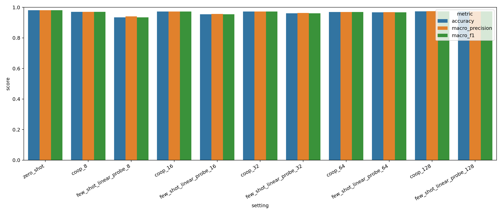
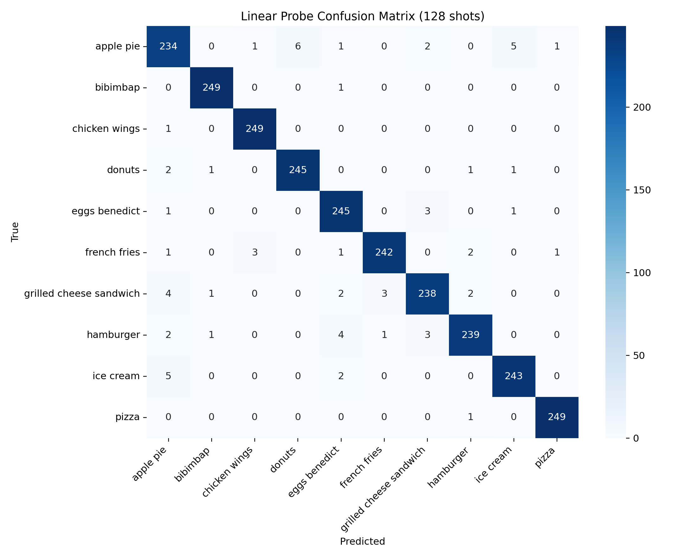
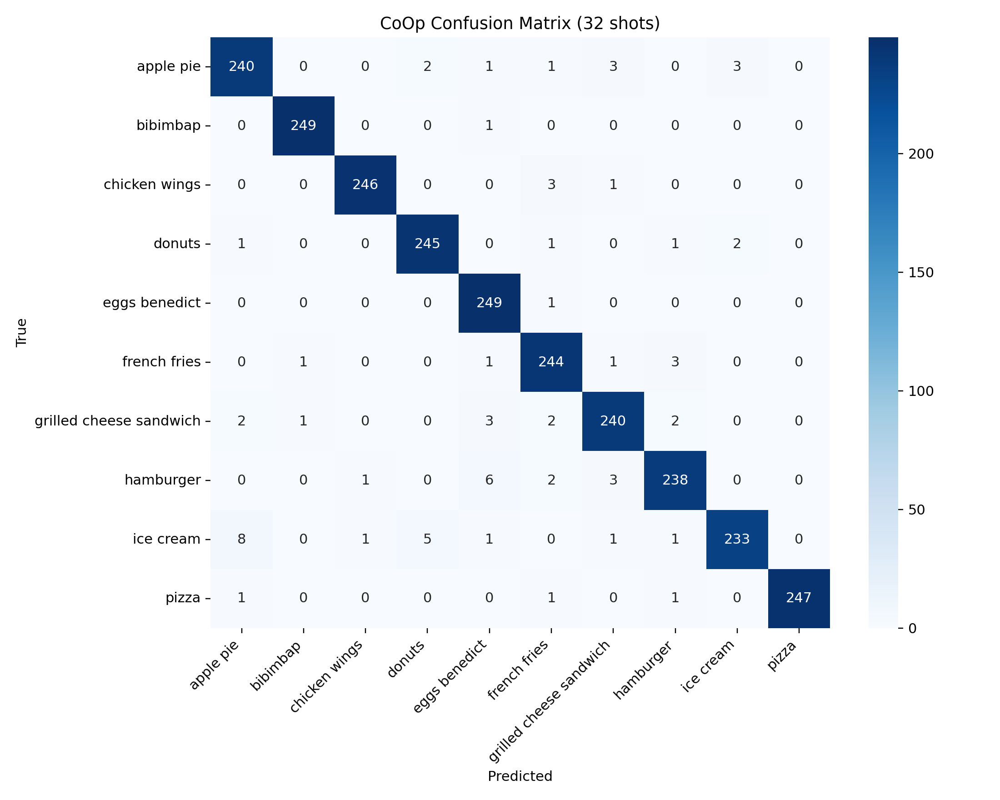
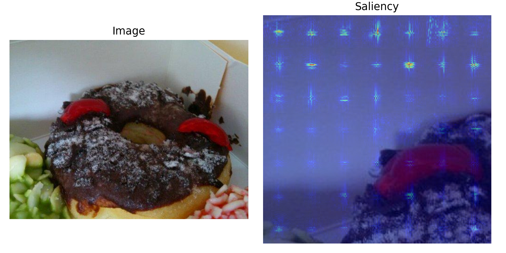
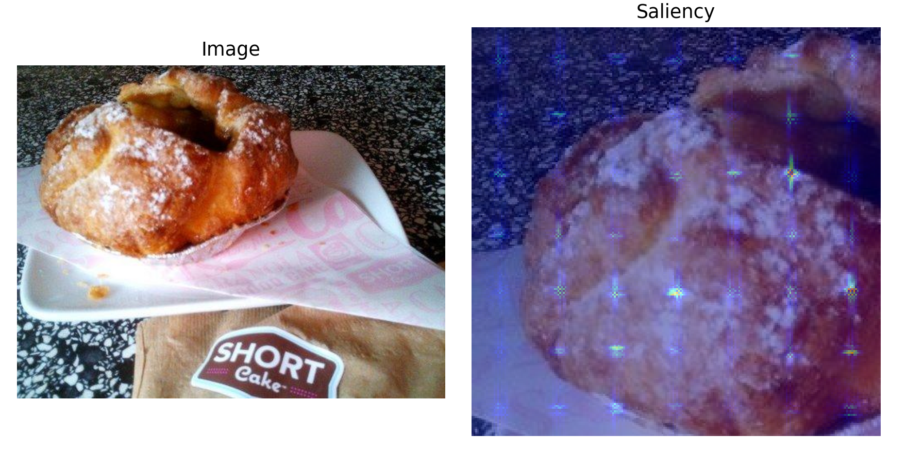

Zero-Shot Accuracy
98.08%
Best overall result, using averaged prompt prototypes and no task-specific training.
Assignment 1 / Multimodal / Evaluation Results
Run 20260406_094056 11 Reported RowsThe latest run reports three consistent patterns. First, averaged five-prompt zero-shot CLIP is the overall best method at 98.08% accuracy. Second, CoOp beats the linear probe at 8, 16, and 32 shots and stays competitive through 128 shots. Third, the hardest failures are concentrated in visually plausible dessert and sandwich confusions, especially apple pie versus donuts and donuts versus hamburger.
Best overall result, using averaged prompt prototypes and no task-specific training.
CoOp at 128 shots is the strongest learned prompt run.
Linear probe at 128 shots nearly matches CoOp but remains below zero-shot.
Averaged five-prompt zero-shot CLIP is the strongest result in the full benchmark.
| Regime | Best method | Accuracy | Why it matters |
|---|---|---|---|
| Overall | Zero-shot | 0.9808 | Best final result without any task-specific training. |
| Few-shot 8 | CoOp | 0.9708 | Large gain over the linear probe at the smallest support budget. |
| Few-shot 16 | CoOp | 0.9724 | Prompt learning remains clearly more sample-efficient. |
| Few-shot 32 | CoOp | 0.9724 | CoOp still leads before the probe starts catching up. |
| Few-shot 64 | CoOp | 0.9692 | The gap narrows, but CoOp is still marginally ahead. |
| Few-shot 128 | CoOp | 0.9740 | CoOp remains the strongest learned adaptation route in this run. |
| Method | Shots | Accuracy | Balanced Accuracy | Macro Precision | Macro F1 |
|---|---|---|---|---|---|
| Zero-shot | 0 | 0.9808 | 0.9808 | 0.9808 | 0.9808 |
| CoOp | 8 | 0.9708 | 0.9708 | 0.9709 | 0.9707 |
| Linear probe | 8 | 0.9340 | 0.9340 | 0.9409 | 0.9345 |
| CoOp | 16 | 0.9724 | 0.9724 | 0.9727 | 0.9724 |
| Linear probe | 16 | 0.9544 | 0.9544 | 0.9565 | 0.9543 |
| CoOp | 32 | 0.9724 | 0.9724 | 0.9726 | 0.9724 |
| Linear probe | 32 | 0.9612 | 0.9612 | 0.9625 | 0.9613 |
| CoOp | 64 | 0.9692 | 0.9692 | 0.9697 | 0.9691 |
| Linear probe | 64 | 0.9672 | 0.9672 | 0.9680 | 0.9673 |
| CoOp | 128 | 0.9740 | 0.9740 | 0.9743 | 0.9740 |
| Linear probe | 128 | 0.9732 | 0.9732 | 0.9732 | 0.9732 |





Nearest-token decoding of the learned CoOp context shows why prompt tuning should not be interpreted as conventional text editing. The learned vectors do not settle into fluent phrases; instead they occupy regions of CLIP token space that are useful for classification even when the nearest vocabulary items look fragmented or semantically unrelated.
| Class | Context token | Nearest decoded tokens |
|---|---|---|
| apple_pie | 0 | slowdown, replacement-char, dumping, ringing, accounting |
| apple_pie | 1 | rou, muck, ora, poz, crock |
| apple_pie | 2 | !, flower-emoji, !!, lor, cr |
| apple_pie | 3 | llen, death, sous, poured, grading |
The highest-confidence failures are especially useful because they reveal what the system believes very strongly but incorrectly. In this run, the most repeated failure cases are `apple_pie -> donuts` and `donuts -> hamburger`, and both persist across zero-shot and CoOp.
| Method | Shots | True | Predicted | Confidence |
|---|---|---|---|---|
| CoOp | 128 | apple_pie | donuts | 0.9996 |
| CoOp | 32 | donuts | hamburger | 0.9991 |
| Zero-shot | 0 | apple_pie | donuts | 0.9981 |
| Zero-shot | 0 | donuts | hamburger | 0.9970 |
| CoOp | 32 | apple_pie | donuts | 0.9962 |

